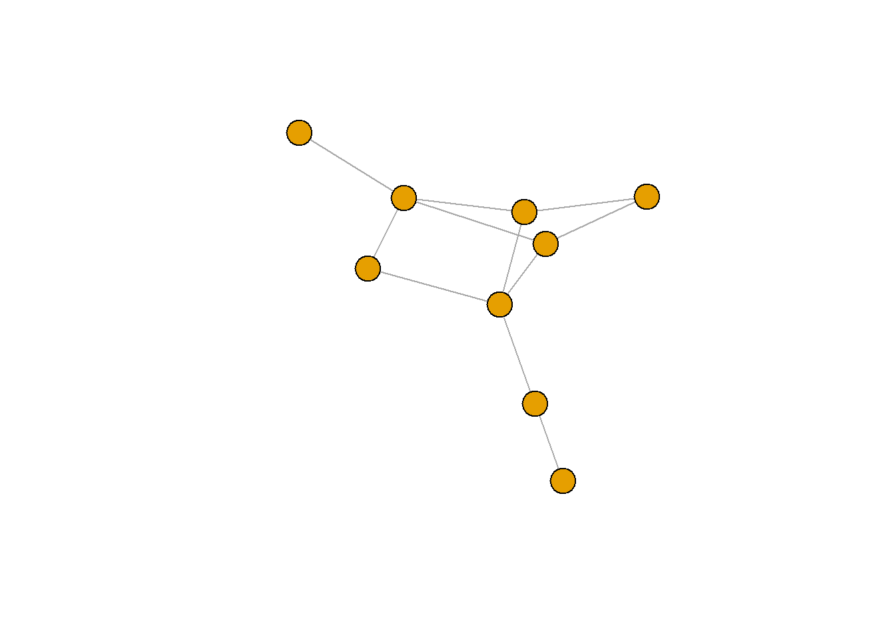
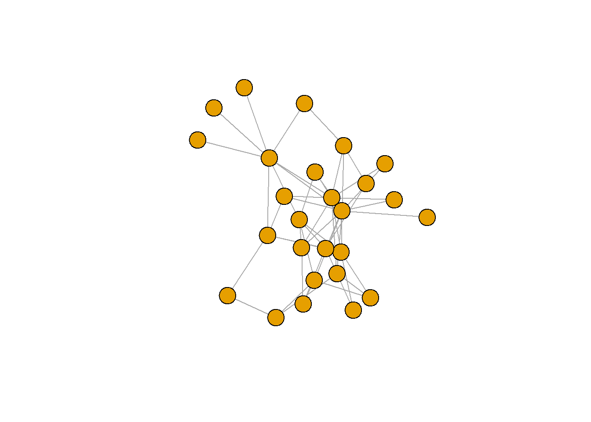
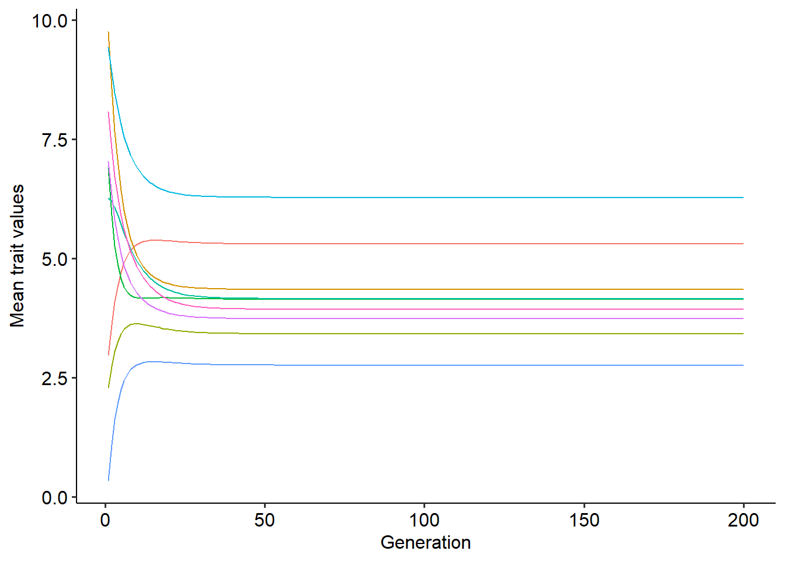

8 Exercise: Coevolution in mutualistic networks
8.1 Simulating coevolution in mutualistic networks
In the lecture, we built a coevolutionary model that describes how the mean value of a continuous trait \(\overline{z}_{i}\), for a species \(i\), evolves in response to the selective pressures of mutualistic interactions and other sources in the environment that favor an optimal trait value, \(\theta_{i}\). This model is a simplified version of the one present in Guimarães et al. (2017).
The starting point of our model was the classic equation from quantitative genetics by Russel Lande (1976). Using this equation as a starting point, we incorporated the selective pressures of mutualistic interactions and other sources in the environment directly assuming how the selection gradient, \(\frac{\partial ln\overline{W_i}}{\partial \overline{z}_i}\), depends on these two sources. We first assumed that for each species \(i\), mutualistic interactions contribute with a fraction \(m_{i}\) and the environment contributes with the remaining \((1-m_{i})\). Next, we assumed that the selective pressures from mutualistic partners, \(m_{i}\), are distributed among all the \(j\) partners of species \(i\) such that each partner contributes with a fraction \(q_{ij}\) to \(m_{i}\) and favor trait complementarity, \((\overline{z}_j-\overline{z}_i)\). For simplicity, we set \(q_{ij}=\frac{a_{ij}}{\sum_{i=1, i\neq j}^{N}a_{ij}}\), where \(a_{ij}=1\) if species \(i\) interacts with species \(j\) and \(a_{ij}=0\) otherwise. Finally, we assumed that the remaining \((1-m_{i})\) sources of selection in the environment favor complementarity with an optimal trait value, \((\theta_{i}-\overline{z}_i)\). Under these assumptions, we arrived at the following equation:
\[ \overline{z}_i^{(t+1)}=\overline{z}_i^{(t)}+h_{i}^2\sigma^2_{i}\left[m_{i}\sum_{i=1, i\neq j}^{N}q_{ij}(\overline{z}_j^{(t)}-\overline{z}_i^{(t)})+(1-m_{i})(\theta_{i}-\overline{z}_i^{(t)}) \right] \] where \(h^2_{i}\) is the narrow-sense heritability of trait \(\overline{z}_i\) and \(\sigma^2_{i}\) is the phenotypic variance of trait \(\overline{z}_i\), which is assumed to be normally distributed.
To simulate the coevolutionary dynamics using this equation, we will use a slightly different approach than what we have been using so far. Our first step will be to set up a matrix of interactions among species. This matrix will determine the network of interactions among species, and will also determine the number of species, \(N\), that will be part of our simulation. For this section we will use the matrices of interactions underlying the networks that we can obtain from the Web-of-Life database. To maker it easier I have downloaded all of the mutualistic networks in this database and stored them in a GitHub repository. Using this GitHub repository we can directly import a network to R, as follows:
URL1="https://github.com/lgcosmo/evo_coevo/raw/main/networks/M_PA_002.csv" #Setting the URL to one plant-ant network
URL2="https://github.com/lgcosmo/evo_coevo/raw/main/networks/M_PL_011.csv" #Setting the URL to one plant-pollinator network
#Importing the matrices of interactions from the URLs
net1=as.matrix(read.csv(URL1))
net2=as.matrix(read.csv(URL2))In the Web-of-Life database, all matrices of interactions are in the format of what is called an incidence matrix or a biadjacency matrix. This is a matrix used to represent interactions when we have two distinct sets of species that interact only with species of a different set. For instance, in pollination networks, plants constitute one of the sets, and these plant species interact only with species from the second set, the pollinator species. This type of network of interactions is called a bipartite network. The incidence/biadjacency matrix of this type of network is a matrix whose rows depict species from one of the sets (usually plants in ecology), and columns depict species from the other set (usually animals). Thus the incidence/biadjacency matrix has \(N_{plants}\) rows and \(N_{animals}\) columns. However, to simulate the coevolutionary model it is easier to work with a matrix containing all species in both rows and columns, such that it has \(N\) rows and \(N\) columns (\(N\) is the total number of species). For this reason, we need to transform the incidence/biadjacency matrix into an adjacency matrix, which can be done as follows:
#Getting number of species and total number of species
n_p = nrow(net1) #Number of plant species
n_a = ncol(net1) #Number of animal species
n_sp = n_p+n_a #Total number of species
# Creating adjacency matrix
A1 = rbind(cbind(matrix(0, n_p, n_p), net1), cbind(t(net1), matrix(0, n_a, n_a)))
#Changing labels
rownames(A1) = c(paste0("P", 1:n_p), paste0("A", 1:n_a))
colnames(A1) = c(paste0("P", 1:n_p), paste0("A", 1:n_a))To make our life easier, we can build a function that takes as input an incidence/biadjacency matrix and returns an adjacency matrix:
adjacency_matrix<-function(incidence_matrix, binary=TRUE){
n_p <- nrow(incidence_matrix)
n_a <- ncol(incidence_matrix)
n_sp <- n_p + n_a
A <- rbind(cbind(matrix(0, n_p, n_p), incidence_matrix),
cbind(t(incidence_matrix), matrix(0, n_a, n_a)))
rownames(A) = c(paste0("P", 1:n_p), paste0("A", 1:n_a))
colnames(A) = c(paste0("P", 1:n_p), paste0("A", 1:n_a))
if(binary==TRUE){A[A>0]<-1}
return(A)
}
# Using the function for the two networks
A1=adjacency_matrix(incidence_matrix=net1, binary=TRUE)
A2=adjacency_matrix(incidence_matrix=net2, binary=TRUE)We can also quickly visualize how these two networks looks like using the igraph package:
##
## Attaching package: 'igraph'## The following objects are masked from 'package:stats':
##
## decompose, spectrum## The following object is masked from 'package:base':
##
## union#Constructing an igraph object from the adjacency matrix
G1=graph_from_adjacency_matrix(A1, mode=c("undirected"))
G2=graph_from_adjacency_matrix(A2, mode=c("undirected"))
plot(G1, vertex.label=NA)

With our matrix of interactions in hand, our next step will be to define a data structure that will store the mean trait values of each species over time. In this case, since we will be dealing with multiple species, it is better to work with a matrix instead of a vector. This matrix will store in each column the values of \(\overline{z}_i\) for each species \(i\), and each row will store the values for a given generation \(t\), as follows:
tmax=100 #Setting the maximum number of time steps in the simulation
n_sp=nrow(A1) #Setting a number of species. It is equal to the number of rows in the matrix of interactions.
dz=matrix(data=NA, nrow=tmax, ncol=n_sp)
colnames(dz)=paste0("SP", 1:n_sp)
print(dz[1:5,]) #Visualizing the first 5 rows## SP1 SP2 SP3 SP4 SP5 SP6 SP7 SP8 SP9
## [1,] NA NA NA NA NA NA NA NA NA
## [2,] NA NA NA NA NA NA NA NA NA
## [3,] NA NA NA NA NA NA NA NA NA
## [4,] NA NA NA NA NA NA NA NA NA
## [5,] NA NA NA NA NA NA NA NA NAThe dimensions of this matrix will depend on the number of species and maximum number of time steps of our simulation. For simplicity, from now on we will work with the matrix “A1”, but feel free to use a different network.
Next, as we did before, we need to define some of the parameters of the model, such as \(h^2_{i}\), \(\sigma^2_{i}\), \(m_{i}\), \(\theta_{i}\) and initial mean trait values for each species, \(\overline{z}_{0,i}\). When we have \(N\) species, we also need to choose \(N\) values for each of these parameters. The number of values can get out of control quickly and to avoid this we will use the same values of \(h^2_{i}\), \(\sigma^2_{i}\) and \(m_{i}\) for all species. For \(\theta_{i}\) and \(\overline{z}_{0,i}\), we will sample these parameters from a uniform distribution from an interval between 0 and 10. The code to do so is reproduced below:
var_z=rep(0.5, n_sp) #Setting the trait variance to a certain value for all species
h=rep(0.5, n_sp) #Setting the heritability to a certain value for all species
m=rep(0.5, n_sp) #Setting the contribution of mutualisms as a source of selection to a certain value for all species
z0=runif(n_sp, min=0, max=10) #Sampling initial mean trait values of each species from a uniform distribution
theta=runif(n_sp, min=0, max=10) #Sampling the environmental optima of each species from a uniform distributionThese values will be passed as arguments to a function that we will use to simulate the coevolutionary model. In this function, we will first set initial mean trait values for all species and then perform the following set of operations inside a for loop:
Set mean trait values of all species at generation \(t\).
Compute the matrix of evolutionary effects, \(Q\). Each entry of this matrix will be equal to \(q_{ij}=\frac{a_{ij}}{\sum_{i=1, i\neq j}^{N}a_{ij}}\). This is equivalent as getting each entry of the adjacency matrix, \(A\), and dividing them by the sum of their corresponding row. Then, we multiply each row of this matrix by \(m_{i}\). Remember that each row in the matrix \(Q\) corresponds to a species \(i\), and each column represents the contribution of each species \(j\) to the evolution of \(i\).
Compute all pairwise differences in the mean trait values of species, \((\overline{z}_j-\overline{z}_i)\). The result will be another matrix with entries corresponding to the differences in the trait of species \(j\) and species \(i\).
Multiply the matrix of pairwise evolutionary effects \(Q\), with the matrix of pairwise differences in traits.
Compute the selection gradient as described in the equation of the coevolutionary model.
Compute mean trait values at the next generation using Lande`s equation.
These steps are highlighted in the code below:
coevo_network<-function(incidence_matrix, m, z0, theta, h, var_z, tmax){
# Setting up adjacency matrix and the data structure to store mean trait values over time for the simulation
A=adjacency_matrix(incidence_matrix=incidence_matrix, binary=TRUE)
n_sp=nrow(A)
dz=matrix(NA, nrow = tmax, ncol = n_sp)
dz[1,]<-z0 # Setting initial trait values
for(t in 1:(tmax-1)){
z = dz[t, ] # Step (1)
Q = A / rowSums(A) # Step (2)
Q = Q * m # Step (2)
z_dif = t(A*z) - A*z # Step (3)
Q_dif = Q * z_dif # Step (4)
mut_sel = rowSums(Q_dif) # Step (5)
env_sel = (1 - m)*(theta - z) # Step (5)
dlnw = mut_sel+env_sel # Step (5)
dz[t+1, ] = z + h*var_z*dlnw # Step (6)
}
# Setting up a data farme with results
dz_df<-as.data.frame(dz)
dz_df$time<-1:tmax
names(dz_df)[1:n_sp]<-paste0("SP", 1:n_sp)
dz_df<-melt(dz_df, id.vars="time")
return(dz_df)
}With the function in hand we can now run it and plot the results:
library(reshape2)
library(ggplot2)
library(ggpubr)
var_z=rep(0.5, n_sp)
h=rep(0.5, n_sp)
m=rep(0.5, n_sp)
z0=runif(n_sp, min=0, max=10)
theta=runif(n_sp, min=0, max=10)
r=coevo_network(incidence_matrix=net1, m=m, z0=z0, theta=theta, h=h, var_z=var_z, tmax=200)
ggplot()+
geom_line(data=r, aes(x=time, y=value, color=variable))+
xlab("Generation")+ylab("Mean trait values")+
theme_pubr()+theme(legend.position="none")
In the plot above, lines of different colors represent the coevolutionary trajectory of the mean trait values of different species. With this function, try to explore how different values of \(m_{i}\) change the coevolutionary dynamics. Think about what differences can you observe from the scenario where only two mutualistic species coevolve.
8.2 Quantifying indirect evolutionary effects
In the lecture we studied that our model for coevolution in mutualistic networks has a stable equilibrium point. This equilibrium point is depicted by the following matrix-vector equation:
\[ \vec{\overline{z}^*}=(I-Q)^{-1}\Psi\vec{\theta} \]
In the equation above, the matrix \(\left(I-Q\right)^{-1}\) is a matrix containing the direct and indirect evolutionary effects that each species exert on each other. This interpretation can be recovered by the matrix power series:
\[ \left(I-Q\right)^{-1}=\sum_{k=0}^{\infty}Q^{k} \] The entries of each matrix \(Q^{k}\), in turn, contain the effects that species \(j\) exert on species \(i\) through a pathway of length \(k\). Thus, each matrix in the series depicted in the equation above corresponds to a matrix containing the effects from pathways of length \(k\) among all species. Therefore, the equilibrium solution of the coevolutionary model represents a scenario in which direct and indirect evolutionary effects connect the selective pressures coming from the environment (\(\theta_{i}\)) across all species in the network.
Since the matrix of direct interactions is known, we can use the matrix \(T=(I-Q)^{-1}\Psi\) to quantify what is the contribution of indirect evolutionary effects to the evolution of species in the network. To do so, we need to perform the following steps:
Obtain the matrix of direct evolutionary effects, \(Q\) and the matrix \(\Psi\), which is a diagonal matrix with diagonal \(\Psi_{i}=(1-m_{i})\).
Compute the matrix \(T=(I-Q)^{-1}\Psi\) and set its diagonal to 0.
Create a new matrix, \(T_{indirect}\) and set all its entries of the matrix \(T\) containing direct interactions to 0.
Compute the contribution of indirect effects as the ratio of the sum of all of the entries of the matrix \(T_{indirect}\) to the sum of the entries of the complete matrix \(T\).
The code to do so is reproduced inside a function below:
indirect_effects=function(incidence_matrix, m){
# Getting adjacency matrix
A=adjacency_matrix(incidence_matrix=incidence_matrix, binary=TRUE)
n_sp=nrow(A)
Q = A / apply(A,1,sum) # Step (1)
Q = Q * m # Step (1)
Psi = diag((1-m), n_sp) # Step (1)
I = diag(1, n_sp) # Creating identity matrix
Tmat=(solve(I-Q)) %*% Psi # Step (2)
diag(Tmat)=0
Tmat_indirect=Tmat #Step (3)
Tmat_indirect=Tmat_indirect*(1-A) #Step (3)
ind_contrib=sum(Tmat_indirect)/sum(Tmat) #Step (4)
return(ind_contrib)
}
# Using the function
ind_net1 = indirect_effects(incidence_matrix=net1, m=0.5)
ind_net2 = indirect_effects(incidence_matrix=net2, m=0.5)
print(ind_net1)## [1] 0.2824513## [1] 0.3639537Looking at these two networks, try to explain why there is a difference in the contribution of indirect effects. Furthermore, using the function, try to explore how changing the value of \(m_{i}\) modifies the contribution of indirect evolutionary effects.